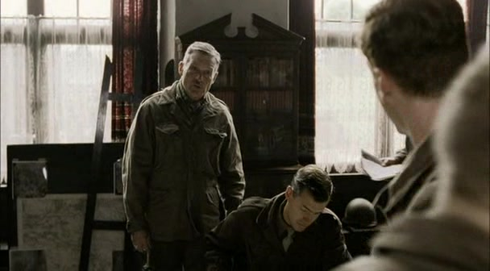
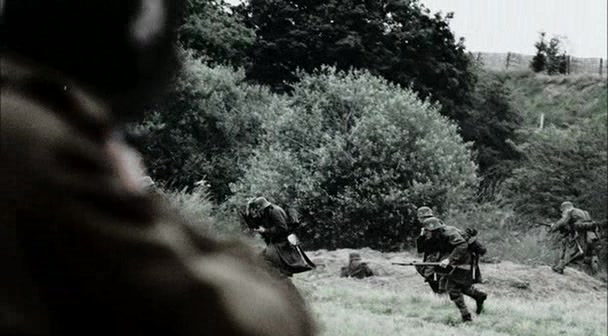
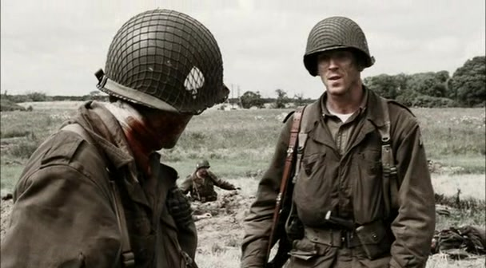
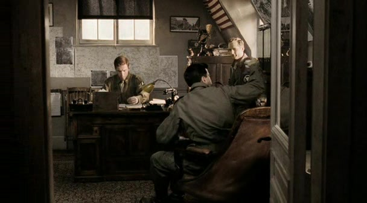
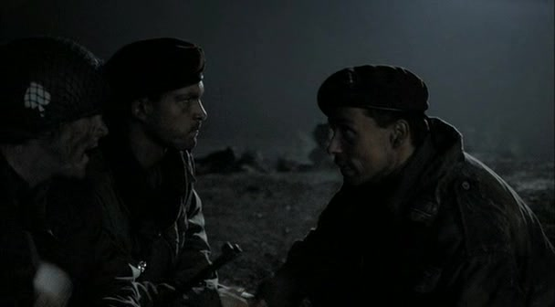
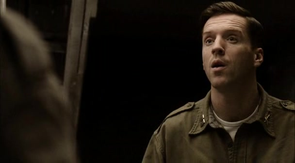
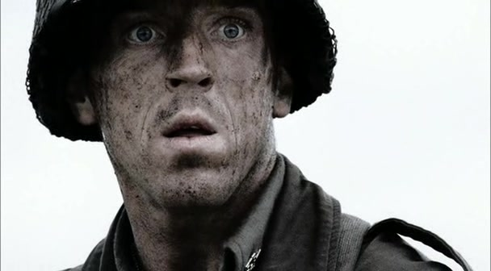
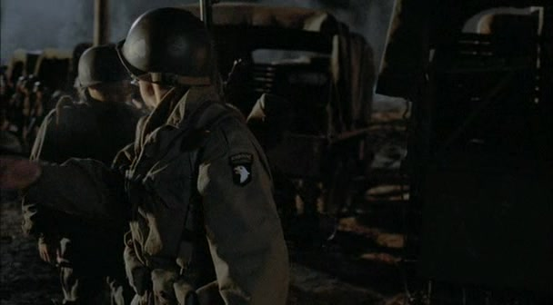

01
荷兰营部 · 战斗之后现在的报告，带回过去的战斗

辛克催交报告的本集镜头；打字机与闪回共同组织这一段。剧情事实温特斯已经进入营部工作，辛克催要行动报告。剧集随后回到荷兰战斗，并穿插返回书桌的画面；这些闪回不是新的军事行动。[5]
这一场为什么重要 · 个人解读
报告要求把复杂事件整理成可以读懂的顺序，镜头却保留了记忆的不连续。观众先感到书桌上的迟滞，再发现这份工作不只需要回忆部署，还要重新面对自己做过的选择。

十字路口 · 1944 年 10—12 月 · 荷兰堤坝、法国穆尔默隆与巴黎、比利时巴斯托涅
本集让温特斯站在三个十字路口：荷兰堤坝上的战术选择，离开 E 连指挥岗位后的职责变化，以及胜利之后无法整理干净的记忆。打字机把事件变成可提交的报告，闪回却不断带回一个年轻德国兵的脸。与此同时，海利格带队营救英军，连队重新学习信任；意外又打断了这次交接。巴黎短假没有提供真正的终点，突如其来的调动将众人送往另一座交通枢纽。本页仅涉及第 1—5 集。剧情事实是影视重演中的事件，解读不等于历史人物的心理诊断；未经档案核实的内心活动不标为史实。[1]
本页范围回顾本集与必要的前集背景；以下主题分析针对剧集呈现，历史补充另作说明。
8 个关键场景，连起本集的因果与变化。
按剧中叙事顺序排列。批注默认展开，可直接阅读场景的意义。

辛克催交报告的本集镜头；打字机与闪回共同组织这一段。剧情事实温特斯已经进入营部工作，辛克催要行动报告。剧集随后回到荷兰战斗，并穿插返回书桌的画面；这些闪回不是新的军事行动。[5]
报告要求把复杂事件整理成可以读懂的顺序，镜头却保留了记忆的不连续。观众先感到书桌上的迟滞，再发现这份工作不只需要回忆部署，还要重新面对自己做过的选择。
剧情事实巡逻队带回伤员后，温特斯带人查看德军火力位置。交战扩大，他发现沟渠中的位置可能被侧击，于是分组发起冲锋，并请求火力支援。[2]
本段的速度来自先前的观察与分工。个人率先前进固然醒目，但若只把它看作勇敢，就漏掉了判断地形、规定目标、协调支援这些较安静的动作。剧集让决断既有技术基础，也有个人风险。

温特斯与利布戈特讨论押送俘虏的真实本集镜头。剧情事实温特斯让受伤且愤怒的利布戈特押送德国俘虏，并收走多余弹药，只留下有限弹药。他明确要求俘虏全部活着送到；这是一项剧中命令。[3]
同一位刚刚领导冲锋的人，此时开始限制自己人的暴力。他没有只依赖口头训诫，而是改变可使用的弹药与押送条件。领导的连贯性体现在两种时刻：知道什么时候必须开火，也知道什么时候必须停下。

本集营部办公画面，作为职责变化的代表配图；不是任命发生的战场镜头。剧情事实温特斯被任命为第 2 营执行官，工作范围从 E 连转向营部。他首先关心谁来接掌 E 连；海利格成为连长，并获得他的认可。[2]
这里首先改变的是职务和负责范围，不能把它直接写成当场晋升少校。新的位置让温特斯能照看更大的单位，却也迫使他把最熟悉的连队交给别人。下一步的能力，是让信任通过继任者继续发生。

夜间接头的本集真实画面；海利格迎接等待撤离的英军。剧情事实海利格带领 E 连参与 Pegasus，协助撤出市场花园行动后留在敌后的英国空降兵。温特斯留在营部，仍向尼克松追问情报与行动风险。[5]
与之前的冲锋相比，这次成功依靠接头、渡河、纪律和协同。温特斯无法再用亲自到场消除担忧，必须允许新连长完成任务。军事上的营救，也让连队看见继任者能够兑现自己的承诺。

海利格出发前的本集画面，用作人物配图；不冒充误伤现场。剧情事实海利格与温特斯夜间同行时被美军哨兵误伤。救治过程中，罗追问已经使用的吗啡剂量，军官无法确定；海利格随后离开连队接受治疗。[2]
外敌并不是风险的唯一来源。哨兵识别与医疗记录这些不显眼的环节，同样能改变一个人的命运。罗的责问暂时翻转了军衔关系：现场最需要的权威，是知道怎样救人，而不是拥有更高的职位。

巴黎段落插入的荷兰战斗回忆：温特斯面部特写，并非他在巴黎穿战斗服。剧情事实温特斯被安排去巴黎休假。平民生活与公共交通并没有完全中断战斗的回忆；镜头再次带回他近距离射杀年轻德国兵的情景。[1]
这段没有把心理经验解释成一段完整独白，而把城市日常与战场面孔并置。我们可以读出战争经验侵入休息的感觉，但不能据此给历史上的温特斯作临床诊断，也不能把演员呈现的记忆当作原始口述。

第 5 集末段卡车调动的真实画面，尚未进入第 6 集的林地生活。剧情事实休整被德军反攻的消息打断，连队调往巴斯托涅。冬衣与弹药不足，温特斯要求尽力收集物资；抵达后，士兵从撤退友军处补充弹药。[1]
胜利报告里的秩序在结尾被新的缺口打破。士兵靠经验、临时收集和互相分配继续前进；那句关于被包围的回答提供心理上的稳定，却没有增加一发子弹。结尾的勇气始终与物资不足并排存在。
切换阶段，点人物或关系，阅读具体证据。
荷兰堤坝：判断火力与地形，冲锋取得优势，随即限制押俘过程中的暴力。
用具体场景对照本集的两种处境。
报告需要清楚交代行动、部署和结果，供营部与团部理解和处理。它把经历转化成能够传递的信息。
年轻德国兵的面孔反复回来。镜头保留主观经验，却不声称它就是历史人物原封不动的内心记录。
给事件建立顺序，说明发生了什么。
↔一个片段会再次出现，不服从事件已经结束的顺序。
个人行动进入单位部署和结果之中。
↔一个面孔独立留在画面里，无法被结果完全概括。
文书可以递交，职务可以移交给继任者。
↔旁人可以陪伴，经历本身仍需由这个人面对。
两种记录各有作用。清楚的报告没有义务穷尽全部感受，主观镜头也不能替代档案；本集的力量来自把两者放在一起，让战术成功与个人代价同时可见。
短句原文、中文自译，以及它在这一刻的分量。
“That's not literature, just keep it simple.”这不是文学创作，写简单些就好。
尼克松看着温特斯写报告，提醒他简洁表达。英文按本集字幕转录核对；中文为本站自译；图为同集营部配图。
朋友给出的是很实用的文书建议，但观众已经知道，这份迟滞并非只来自写作技巧。句子的轻松语气，让报告的行政功能与记忆的私人重量靠得更近。[3]
英文短句核对来源列在篇末；中文为本页自译。配图的场景与出处随卡片标注。
只沿本集与此前的线索回看，不揭示后续情节。
剧情事实书写报告的现在与荷兰战斗的回忆反复交替。[5]
个人解读剪辑使胜利的军事描述无法独占这个故事。书桌让经历获得秩序，闪回留下整理过程中仍然刺痛的部分。
剧情事实温特斯先在堤坝带队冲锋，随后海利格领导 Pegasus，温特斯留在营部。[2]
个人解读前面的冲锋建立了个人信誉，后面的营救检验了组织能否继承它。成熟的领导也包含允许可靠的人独立完成工作。
剧情事实本集回忆荷兰堤坝的交战，末尾部队又前往交通枢纽巴斯托涅。[1]
个人解读标题把道路上的选择与人物的职责变化连接起来。地理上的交汇可以标在地图上，个人的交接和休息却没有同样确定的抵达时间。
第 5 集结束时，E 连已经来到另一个十字路口。海利格的短暂接任、巴黎的短暂休假，都未能让故事停稳。温特斯继续承担更大的职责，士兵则带着临时补来的弹药向前。至于进入林地之后会发生什么，本页在这里停下。
回到档案首页 ↑